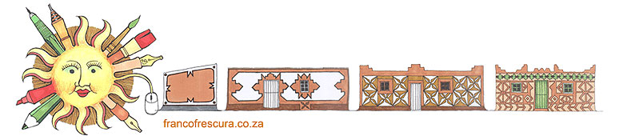

|

Home | franco frescura | architecture | urban issues | lectures | graphic work | postal history | historical archive
INTRODUCTIONMy first article, commissioned by Percy Qoboza, editor of the now defunct newspaper, The World, was published in May 1976. Since that time I have written many thousands of words covering a wide spectrum of interests, from political satire to housing, from indigenous architecture to cultural conservation, and from postal history to social analysis. Some of these have found publication in venerable academic journals and are now part of the historical record, but many have ended up as wrapping for someone’s fish-and-chips dinner. Others yet have never seen the light of day, either because they were too scurrilous, or too angry, or just plain boring. During the course of my life as an academic I have also delivered an untold number of lectures, usually to students resigned to passing my courses, but sometimes as an invited speaker before an interested audience. Barring those few that were later developed into formal papers, most of these talks survive only as brief personal notes and fond memories. Architectural authors, in South Africa as elsewhere, are often limited in their publishing options. Few journal editors are able, or even willing, to carry in-depth research articles, preferring photo-essays and PRO-generated micro thoughts to academic analysis. Architects, it might appear, are picture-literate but suffer from reading inertia. As a result most of my work has been scattered across a variety of journals, as diverse in nature as housing, archaeology, culture, history, conservation, building construction, property, planning and philately. Much of this work was also published during the 1980’s, when the international community had, rightly, imposed a cultural embargo upon apartheid South Africa. As a result, local publishing developed some distinctly parochial attitudes, many of which persist to the present day, and many local academic journals never achieved the wider overseas readership that they perhaps deserved. Although many of the articles and papers reproduced here were submitted to local editors as a matter of choice, a number of the journals they appeared in have since vanished, and access to back copies has become a matter of archival archaeology. Consequently this website sets out to collect some of my research into an easily accessible data base which will make it more readily available to students and colleagues alike, both here and overseas. This website is also intended as a depository for a number of research projects which, at the time, found publication as reports, and thus enjoyed only limited circulation. Many of these, specifically in the field of historical and architectural conservation, will ultimately be grouped to form the core of a separate website. At that stage it is hoped that both SAHRA and other practitioners in the field will also contribute their work to this database. The concept of archiving data as a research strategy is taken further in other areas, where a number of incomplete and unpublished manuscripts have been made available for general access. It is inconceivable that any publisher would ever consider the commercial distribution of a book entitled The Postmasters of the Cape of Good Hope, 1792-1910. Yet the manuscript is available and is of interest, even if this is limited to a small group of genealogists. Similar listings of mission stations, southern African building terminology and colonial settlements suffer from the same limitation and have been included in this section of the website. Pending their future publication, please accept that the author has asserted his intellectual rights. During the course of my research I found that the documentation of southern Africa’s indigenous architecture ceased in the 1870s, when the focus of travellers began to shift northward to Central and West Africa. The first major anthropological studies of the region only began to be published in 1927, leaving us with a fifty year hiatus in the anthropological and pictorial record of the subcontinent. This lack became particularly noticeable once researchers in other fields, such as History, Anthropology and Geography, also began to identify this as a time when the colonial economy was beginning to have an important influence upon the lives of our rural people. I soon found that picture postcards, which first appeared in large numbers from 1903 onwards, neatly filled this gap. However, it was only once my interests broadened to include colonial architecture, that the value of this pictorial record was fully realized. The visual archive included in this website is therefore intended to bring together material which is not commonly available to researchers and, given the nature of the collecting market, would require many years and considerable expenditure to gather into one data base. It is intended to act as a working document, which will be extended and amended from time to time as additional material becomes available. In due course, I am also planning to make available to students my lectures on a variety of subjects, including southern African folk architecture, colonial settlement, historical conservation and graphic design. However, as these have a high pictorial content, they may take some time to finalise, and your indulgence is kindly requested. I have begun with a number of talks delivered in Italian in May 2007 to the School of Architecture, at the Campus Leonardo of the Politechnico in Milan. Students of Italian literature are requested to view these efforts with a little forbearance. It is unavoidable that the concept of Open Access to data should also raise the question of intellectual rights. I have no hesitation in making my published research available to colleagues in the field for bona fide academic activities, including teaching, research and reference. To this end these may be downloaded into hard copy and made available to students on a non-profit basis. It is requested, however, that the conventions of academic referencing be observed, and the name and details of the journal which originally published each individual article are appended for ease of quotation. Failure to do so may result in highly inappropriate overreaction on my part. Regrettably, the same courtesy could not be extended to unpublished material, and while I am quite happy to share this incomplete knowledge with fellow researchers, the constraints of copyright do not allow me to make this work freely available. For slightly different reasons downloading of images from the visual archive has similarly been curtailed. Researchers wishing to obtain copies of individual photographs are advised to contact their owners directly. One specific problem which arose during the design of the website related to uniformity of presentation. Originally it had been planned to merely scan in the original pages, but as this made them less legible and difficult to download into hard copy, it was decided to revise all typefaces, layouts and methods of referencing. Consequently the appearance of the web pages bears little resemblance to the original published product. However, I have withstood the temptation to make cosmetic changes to the original text, hard as that may have been at certain times. I would like to extend my grateful thanks to the many students and colleagues who have participated with me on a number of important research projects. Wherever possible these contributions have been acknowledged in the text, but should any errors or omissions have taken place, please spare your lawyers’ fees and contact us on our website. We shall be delighted to make what changes may be necessary. Thanks must also be given to Joni Light and Jonas Jiana, of South African History on Line, who designed this website and are responsible for its maintenance. Their hard work and good humour have been largely responsible for its success. At the end of the day, however, I remain responsible for its contents, and any editorial failings should be laid at my door.
Franco Frescura Copyright @ francofrescura.co.za | designed by sahistory.org.za
|